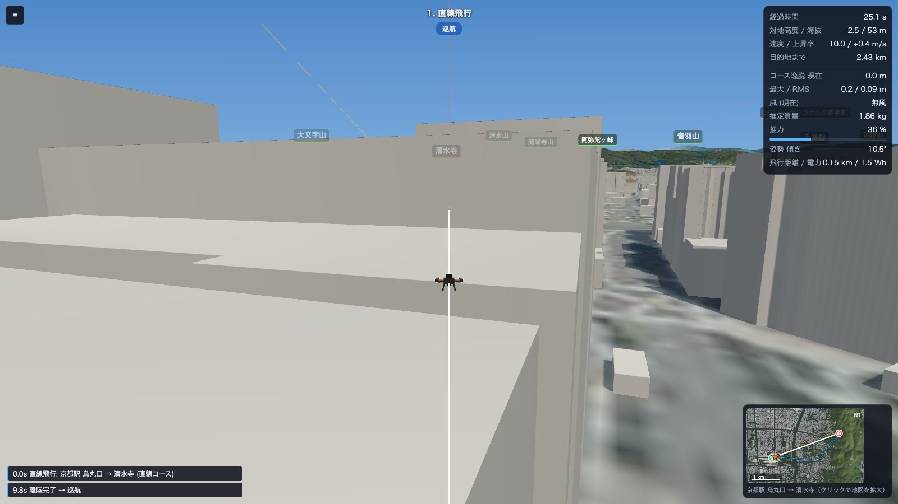
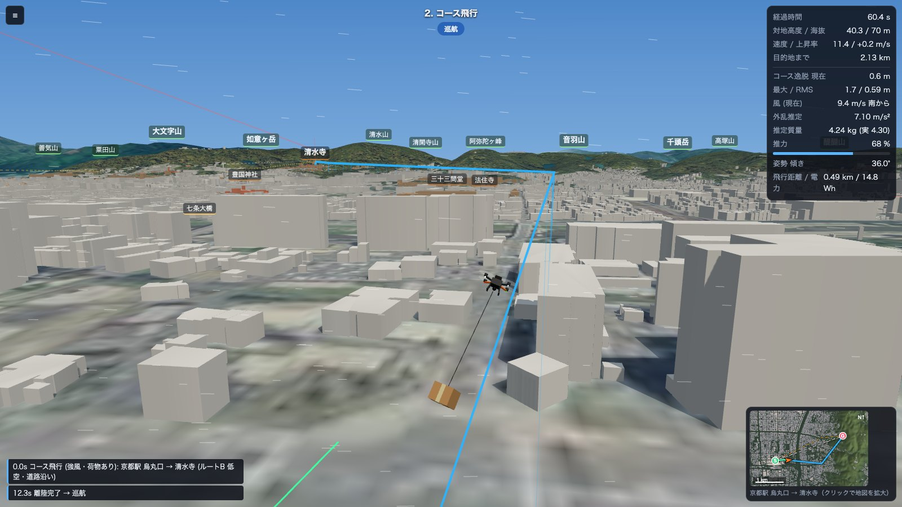
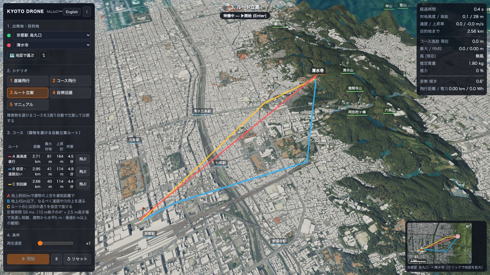
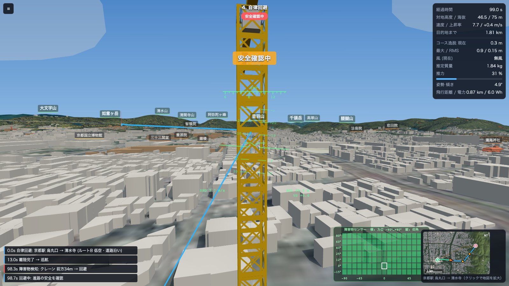
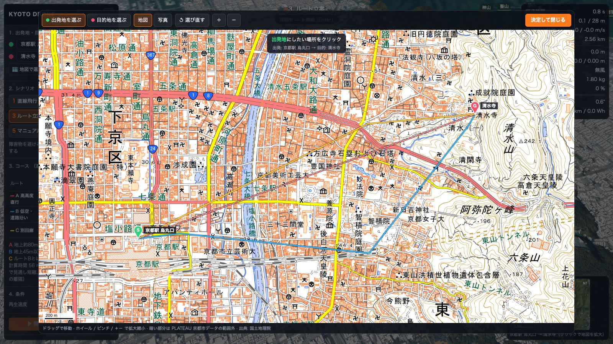
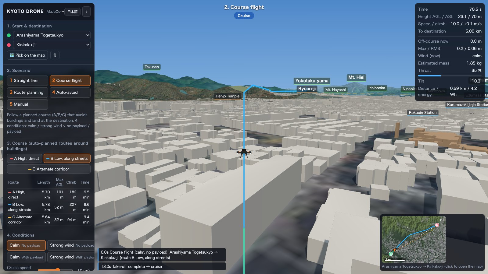

01
直線飛行 — 失敗を体験する
障害物を考えずに目的地へ一直線。京都駅を飛び立ったドローンは、約 130 m 先のビルの壁に衝突してモーターが止まり、落下します。衝突速度と衝突対象が記録され、衝突音も鳴ります。
MuJoCo × PLATEAU KYOTO
PLATEAU の 3D 都市モデルで再現した京都市全域（建物 約 51 万棟）を、MuJoCo 物理エンジンで動くクアッドコプターで飛ぶドローン・シミュレーター。直線で突っ込んで墜落する失敗から、自動ルート立案、強風と吊り荷、障害物の自律回避、マニュアル操縦まで。
macOS (Apple Silicon) · Windows 10 / 11
SCENARIOS
同じ出発地・目的地で、飛び方を変えて比べられます。

障害物を考えずに目的地へ一直線。京都駅を飛び立ったドローンは、約 130 m 先のビルの壁に衝突してモーターが止まり、落下します。衝突速度と衝突対象が記録され、衝突音も鳴ります。

建物を避けて立案したルートに沿って飛び、目的地に着陸します。条件は「無風 / 強風 × 荷物なし / 荷物あり」の 4 通り。強風は平均風・突風・乱流で、吊り荷はロープで揺れる本物の剛体です。推力が足りなければ、悪条件では飛び切れません。

建物と地形から、性格の違う 3 つのルートを数十ミリ秒で立案し、距離・最大対地高度・上昇量・所要時間を比べます。

コックピット視点。コース上のクレーン・係留気球・横切る他機ドローンを、前方センサー（119 本の光線、10 Hz）で検知。回避方向を選び、安全を確認してからコースへ復帰します。姿勢指示器とセンサー表示つき。
キーボードかゲームパッド（モード 2）で自由に飛行。高度保持と姿勢制御はフライトコントローラーが担当するので、ビルの谷間や鴨川の上を気持ちよく飛べます。風を吹かせて操縦の難しさを試すことも。

ANYWHERE IN KYOTO
出発地と目的地は、金閣寺・清水寺・伏見稲荷など 20 か所のプリセットか、地図をクリックして京都市の好きな場所に。選んだ 2 点のまわりの建物と地形を読み込み、平らな場所を探して離着陸します。
UNDER THE HOOD
1.8 kg の X 型クアッド。4 つのロータに推力・反トルク・モーター遅れ。街全体を 2.5 m 格子の高さ場として衝突計算し、吊り荷はロープ（テンドン）でつながった剛体です。
位置 PID と幾何学的姿勢制御（SO(3)）。外乱オブザーバが風や荷物の振れを推定して打ち消し、質量推定が荷物の重さに適応します。ON / OFF で効果を比べられます。
10 m 格子の A* と 3D 見通し判定。建物から水平 5 m・垂直 8 m 以上離れ、高度は航空法の 150 m 未満に収めます。
国土交通省 PLATEAU の 3D 建物 約 51 万棟と、国土地理院の地形・航空写真。寺社は色分けされ、1,300 以上の地名ラベルが街に浮かびます。
ロータ音は 4 つのモーターの推力に合わせてリアルタイムに合成。上昇や突風で音が変わり、墜落すると衝突音とともに回転が止まります。
ボタンひとつで UI も地名ラベルも英語に。海外のゲストへの紹介や、英語での授業・デモにも使えます。

DESKTOP APPS
インストールしてすぐ飛べます。京都市全域の建物データをアプリに同梱しています。
※ 航空写真と地図は国土地理院から読み込むため、インターネット接続が必要です。